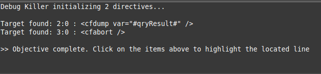

Sublime Debug Killer
Find debug statements unintentionally left behind in your code. As developers and web application builders we sometimes have a need to see more information in our code and will write debug statements to get what we need.
Here are some examples in a few languages where you might have debug statements in code:
<!-- ColdFusion -->
<cfset qryResult = someDAO.getSomeData(id=12345) />
<cfdump var="#qryResult#" />
<cfabort />
// JavaScript
resultCallback = function(data) {
console.log(data);
if (data.length) {
// do stuff...
}
}
// PHP
function getData($id) {
$qryResult = $someDAO.getSomeData($id);
var_dump($qryResult);
}
With this plugin press CTRL + ALT + K and you get
